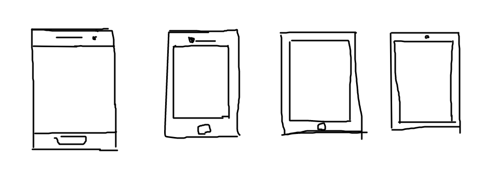

스마트폰
스마트폰은 컴퓨터를 결합한 무선 휴대전화기이다. PC에서 실행되는 운영체제보다 작게 만든 모바일 운영체제를 탑재하여 인터넷 검색, 전자우편, 간단한 문서 편집, 오디오 및 비디오 재생 등 PC의 기능을 거의 모두 갖추고 있다.
역사
최초의 스마트폰은 사이먼으로 추정된다. IBM사가 1992년에 설계하여 그 해에 미국 네바다 주의 라스베이거스에서 열린 컴댁스에서 컨셉 제품으로 전시되었다.
안드로이드
안드로이드는 휴대 전화를 비롯한 휴대용 장치를 위한 운영 체제와 미들웨어, 사용자 인터페이스 그리고 표준 응용 프로그램을 포함하고 있는 소프트웨어 스택이자 모바일 운영 체제이다.
아이폰
아이폰(영어: iPhone)은 미국의 애플사의 휴대 전화 브랜드 및 시리즈이다. 2007년 1월 9일에 스티브 잡스가 처음으로 발표를 하였다.2016년 7월 28일에는 휴대전화 최초로 누적판매량 10억대를 돌파했다.
샘플
스마트폰 샘플
